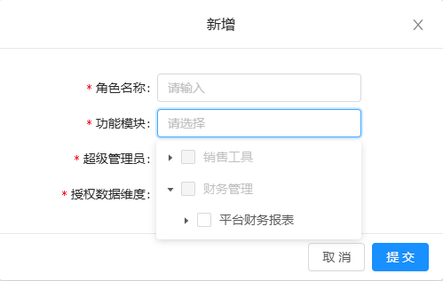

需求说明：【汇总成本报表/单价统计表】支持根据【SKU部门】或【入账部门】配置【部门】维度的数据权限；
【汇总成本报表/汇总出库明细/销售出库明细（管报）、其他成本明细（管报）】支持根据【部门】或【SKU部门】或【入账部门】配置【部门】维度的数据权限；
【数据权限配置/角色配置】：详见链接：
1.【新增、修改】：如右图，1.1【功能模块】：1.1.1下拉选项新增财务管理>成本核算>汇总成本报表；
1.1.2多选时，判断所选选项对应授权数据维度选项是否一致，若不一致则不允许选择并提示：所选功能模块存在不同授权数据维度：【A】和【B】，请重新选择！
如：所选功能模块存在不同授权数据维度：【部门、账号】和【部门】，请重新选择！
1.2【授权数据维度】：当功能模块为成本核算及子菜单时，下拉选项展示‘部门’；
当功能模块为平台财务报表及子菜单，平台发货订单中心时，下拉选项展示‘账号’‘部门’
未选择功能模块时，点击提示请选择功能模块！
2.【关联用户】：弹窗【用户名称】搜索框支持空格转逗号；同时改为精确查询；
3.搜索框：2.1【功能模块】：新增成本核算及子菜单可选；
2.2新增【是否超管】位于角色名称右侧：下拉多选无默认值，选项包括是、否；

成本核算
汇总成本报表